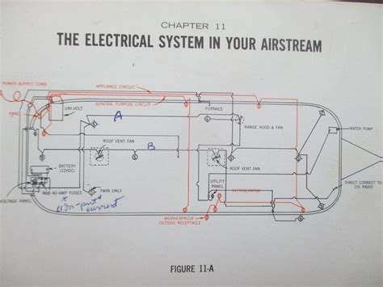
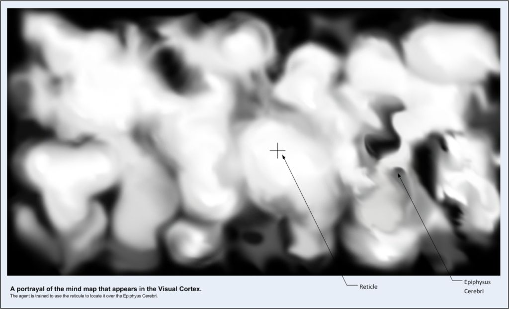
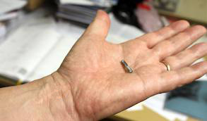
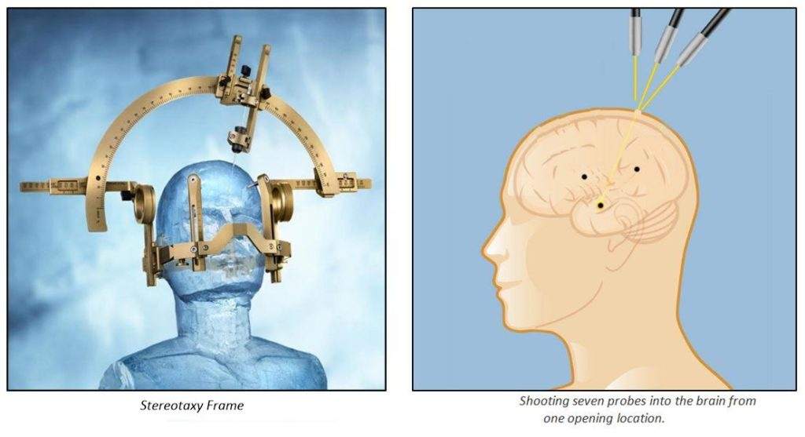
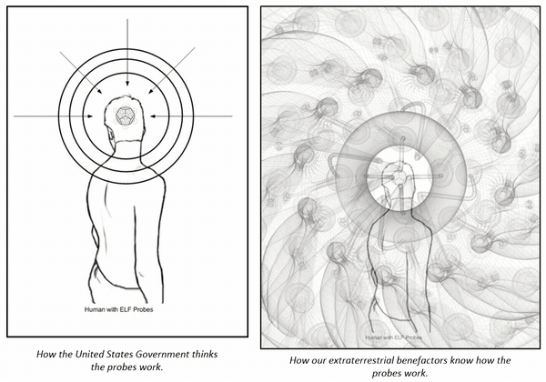

Let us return back to my narrative. This post follows an earlier post where I had participated in a discussion on how Special Access Programs work, and the need to be implanted in order to access MWI realities and geographical transport egress…
This post describes a medical procedure that I went through. Enjoy.
Summary
This post discusses the insertion of specialized devices into the skulls of members of MAJestic. These devices have numerous purposes and abilities. You cannot be a member of MAJestic without these devices in your skull.
Review
First, a quick review. Per the earlier lecture where we all stood and listened to the purpose behind the probes. Let’s keep in mind that the probes performed two very important functions. Firstly, [1] it is a “key” to permit implanted agents entry through a special “door” or portal, and [2] it controlled memory access.
Finally, myself and Sebastian, possessed an additional kit of probes that [3] provided autonomous MWI world-line travel functionality.
So, to enter the program and be a member, we had to have probes implanted in our skulls. To prevent confusion, it must be understood that the program did not exist to install probes in people’s brains. But rather, the probe installation was a mandatory feature of membership in the particular program that we were now members of.
All members of our program needed to have probes installed. This fact was covered in the previous post. This post goes into greater detail as to how the probe insertion procedure was conducted and what was involved.
“The U.S. Government has no evidence that any life exists outside our planet, or that an extraterrestrial presence has contact or engaged any member of the human race … In addition, there is no credible information to suggest that any evidence is being hidden from the public’s eye.” -The Obama Administration (D)
Implantation Facility
There were three implementation stations at the facility. Each station consisted of a “off the shelf” industrial / office cubicle. Within it was an area that consisted of a chair next to a pile of various electromechanical devices, a curved (blank) screen, and a raised control booth.
The control booth was raised up approximately 18 inches above the floor (two steps), and the small slide windows looked down behind the chair where we sat down. There, each station had two techs. One in the booth and the other making the necessary adjustments to the equipment around us. The one in the booth was a petty officer, while the technician laboring at the station was a seaman. All three were under the supervision of a lieutenant who was not present for much of the procedure.
These stations were the exact stations that I had visited earlier with my class. The only difference was that the stations had other equipment arranged in place around the chairs. And, of course, there were far fewer people. Only I and my colleague were being implanted at that time. I was assigned the middle implantation station, and my colleague was assigned to the third station.
An Overview
The military has a large number of secret programs.
Access to them, and knowledge about them are controlled. These programs are called Special Access Programs, or SAP for short. Typically, the management of the DOD as well as the individual generals and leaders in the military understand the purposes and roles of these programs, though they may or may not know about the details.
In general, the SAP classification is far more secretive than “Top Secret” and has its own methodology and systems of governance. Perhaps once could best describe this methodology as a compartmentalization method for control of state secrets. (SAP)
In the military, especially in the R&D branches, are even more secretive programs. Programs so special, so exclusive, and so secretive that only a very limited number of people can ever have access to these programs. Indeed the knowledge of these programs is so exclusive that only the very highest levels of leadership know about them.
Often knowledge of these programs are limited to a mere one to three people! These programs are called “waived”. Which means that reporting of the existence of the program to the working level leadership is restricted and forbidden. Often the “knowledge” germane to these programs is limited to only an alphanumeric designation on the budget spreadsheet, and perhaps an executive summary as prepared by the program director. (W-SAP)
Additionally, some programs are so controversial that the military, and political American leadership, must disavow knowledge of the existence of the programs and membership. (Much like what is described in the television show “Mission Impossible”, or “The man from U.N.C.L.E.”.)
These kinds of programs are called “unacknowledged”, and are denoted by a “U” in front of the SAP. All programs related to extraterrestrial life are established as unacknowledged. These are the highest and most secretive programs that exist in the United States. (W(U)-SAP).
To clarify for the slower readership in the audience, all of the fantastic adventure movies being churned out of Hollywood today would be classified as W(U)-SAP programs. That would include “Mission Impossible”, “007”, “X-Men”, “Jason Bourne”, to list a mere handful of the popular movies available to the American public today.
Everyone who enters any black-project program run by the military that is classified as an “Waived & Unacknowledged Special Access Program” (W(U)-SAP) will be implanted with a series of ELF probes. I know that if you are a member in MAJestic you are simultaneously a [1] member of a W(U)-SAP and are [2] implanted. This includes all sub-programs and sub-classifications of these programs. If you are a member of MAJestic you are implanted.
Special access programs (SAPs) in the federal government of the United States of America are security protocols that provides highly classified information with safeguards and access restrictions that exceed those for regular (collateral) classified information. It may be a type of black project. An unacknowledged SAP (or USAP) is made known only to authorized persons, including members of the appropriate committees of the United States Congress.
Of course, the strictest membership in the Waived Unacknowledged Special Access Program has even more serious controls W(U)-SAP, which necessitates (I assume) even more capable ELF probes and security measures. Such as ourselves. Implantation of probes is a serious matter and different types and families of probes are utilized. Even though I have mentioned this fact earlier, it is a very important point that the reader needs to understand. This fact needs to be well appreciated and embraced.
Probes are important.
This is the realm of the MAJIC proword.
MAJIC or as I refer to it as MAJestic, is so exclusive and secretive that even the President of the United States might not have access to it. Certainly the likes of Edward Snowden, or your local Representative or Senator will not have access to it. Typically, the ranking members of the organization DO KEEP SECRETS. (They won’t sell the secrets to the highest bidder, like Hillary Clinton did during her “pay me to play” scheme.)
MAJIC or as I refer to it as MAJestic, is so exclusive and secretive that even the President of the United States might not have access to it.
Once in the program, we never referred to the program at all. While we all knew that we were involved in something highly classified, we never vocalized it.
It was CRITICALLY secret. It was so secret that we never told anyone, or implied our existence to anyone, even among ourselves. We never wrote or read documents with “Top Secret” stamped on top of it. Our organization and participation was so highly sensitive that everything was committed to memory and face to face communication. We never wrote or used unsecured lines when communicating with each other.
The implication of this is that every UFO, or extraterrestrial-technology or contact “whistle blower” involved in these programs has an implant. That implant is used to track them and used to control their memories and actions.
People who identify themselves as exposing the dark and secret world of UFO’s and other black projects, if they are telling the truth and not spreading disinformation, have identifying probes inside their skull. This is easy to check with an MRI scan. Thus it is easy to validate and verify anyone who talks about UFO’s as an insider. Have them get an MRI scan, or if too costly, an X-ray.
Real and actual MAJestic members have these probes. I have them. They can be seen on both an X-ray and an MRI scan, though the MRI provides the best and clearest viewing resolution. How do I know? I went to two hospitals and had both x-rays and MRI scans taken to see them, as well to reassure myself that I am not crazy.
Sometimes you NEED to do this in a world filled with liars, frauds, and tricksters.
I would imagine that those whom have only a passing involvement in the programs, might be able to avoid implantation. As those who are performing a very low level of involvement. For instance this would include clerks, guards, janitors, maintenance men, and garbage collectors. But, it simply makes sense for everyone who plays an active and important role in these programs to be implanted.
Some Points
Erasure or simplification of a military history. It is best to get new member early in their military career; well before the individual has had time to develop a history with the service. In my case, as well as with Sebastian, our histories are mostly blank. However, the Base Commander, out of necessity, has a very strong and glorious military history that remains intact. Therefore the erasure or degradation of one’s military background depends on the level of secrecy and the overt “public” persona that the agent must possess.
Records evaporate over time. Given enough time, records become lost, erased or accidentally destroyed just simply due to the passage of time. It is always in the best interests of those in the program to let time erase the background information of the agents. Programs, companies and places tend to disappear. A company that might have existed for four years in 1973 will be very difficult to find information on. The people involved the photos of the place and all the documents associated with that company is long gone. The mass collection of data and unification in a central data bank is a recent phenomenon.
The reader just has to agree with me on this. It makes sense from every aspect of a secret organization. If the organization has the technology; then the organization would use the technology. I agree with the decision to do so. I think that the military was correct in implanting us. I say this two times.
The military was correct in implanting us.
I do not know if this ELF implantation procedure extends to non-black programs. Therefore, it is possible that individuals such as Mr. Snowden were not implanted. I know that it didn’t extend to the general rank and file in the military. At the time that I was implanted, its use was limited to participants in [1] specific black projects, [2] government officials posted overseas in embassies and consulates, and [3] selected special military operatives. I also know that there were many different kinds of implants, with different functions and features, as well as constantly evolving generations of implants. I would imagine that the implants of today would be quite powerful and versatile.
Implantation Schedule
Therefore, for the record and to keep things clear, all MAJestic members are implanted as either W-SAP members or the much more secretive W(U)-SAP membership. The technology is used in non-MAJestic programs but I do not know much about that aspect of utilization. All that I know is that some embassy officials and some military special force operatives have been implanted with this technology.
Not to get confused; being a member in a SAP program does NOT guarantee that they would be implanted. However, being a member of the MAJestic organization absolutely does guarantee implantation.
General Guidelines
People who possess ELF probes generally operate under great independence and autonomy. The military records of their participation are often discarded or replaced with other things. No one knows how many people were participants in the various levels of the SAP programs, but please understand that all of us were volunteers.
We all left our trained positions to enter this program, and the consequences associated with it.
These consequences and attributes could and usually did include at least some of these characteristics; the [1] erasure of military history, [2] obscured background, [3] fake and false identities and all the associated [4] documents. Not to forget to mention, that all MAJestic members also had a [5] discrediting binder and a [6] planned retirement “opt out” strategy.
No one is ever implanted without their approval. And, most importantly, the ELF field effects cannot be experienced unless you have the implants.
Feeling ELF Radiation
Non-implanted individuals cannot “feel” the presence of the waves. (I would be under the effects of an ELF field, and those around me would be completely unaware of the presence of the field.)
Thus, the conclusion is simple, people who claim to be harassed by the ELF waves, are either actually truly implanted, or are delusional. There is no middle ground for discussion in this matter. I most strongly repeat this point to the reader. Absolutely no person can be harassed by ELF radiation unless they actually have probes implanted inside their brain.
A person who does NOT have the implants will be unable to tell if there is any kind of directed ELF wave aimed at them. They simply cannot tell. The body of a non-implanted person simply cannot feel the effects of an ELF wave.
If you are actually being “harassed” by ELF waves then you can conduct certain basic tests to verify that this is the case. I strongly urge the reader or anyone who feels that they are being harassed by ELF radiation to perform these basic tests.
Things to do if you Suspect you are being ELF Harrassed
Here are my thoughts on this matter. Keep in mind that unless you have the probes, the radio waves will go right through you like nothing. Never the less, if you think that the government is beaming radio waves into your head, then you can take these precautions.
- I strongly suggest that the person, first of all [1], monitor the temperature of your body, especially your head and forehead. (There are color coded temperature-sensitive adhesive strips designed for infants that the reader can use for this exercise.) When the probes are activated by the ELF signal, they will generate heat. This heat will dissipate through the skull and forehead. You will see a noticeable increase in the temperature of the head shortly after the probes are turned on. This could be a five degree spike within a two minute interval.
- Secondly [2], monitor how you react to grounded and non-grounded metal. The ELF waves will generate a large and painful static discharge when you touch metal. If you are unable to generate a spark, you are unlikely to be under the effects of an ELF field. (Remember that it is easiest to generate a spark in a dry environment, however when under an ELF field, sparks are generated in the most humid of environments as well.)
- Thirdly [3], look at the ceiling with your eyes and look for cavitation shadows. These are harmonics that are generated in the visual cortex as a side effect of the probes reactions to the ELF field. You will see them. They will look like waves of dark shadows. If you have none of these effects, it is highly unlikely that you are under an ELF “harassment” field.
- Finally [4], if you really want to find out once and for sure if you actually have probes is to go to a hospital and find out. The probes are certainly observable on an MRI scan, and visible to a trained doctor via x-ray. ELF radiation has absolutely ZERO effects on a normal and healthy human.
If you fail to validate these tests your issues or symptoms are due to something else entirely, and not an ELF field.
Again; ELF waves cannot be “felt” unless a person has probes or probe-like objects in their skull.
The presence of these probes in my skull is the only hard proof that what I am saying is the truth. Other than that, everything that I am saying is just devoid of physical proof. (Except for [1] (deleted), and the [2] fiducials in the walls of various government buildings. Or, additionally, the [3] odd coincidence that all the members of my MAJestic cell met at NAS NASC Pensacola Florida in 1981. As well, as when we met again at the NAS China Lake, California in 1986. And finally met yet again during retirement at ADC Pine Bluff, Arkansas in 2006. – quite the number of coincidences!)
Coincidences…
What I know about the military use of these probes is limited. Even though I was implanted while in the military, I was not a military operative. Nor, was I trained in any covert art, or technique. I operated as a civilian, and reported to no one in the military chain of command. My position, role, and training fell completely outside of the conventional military sphere of control. This is wholly important.
Full disclosure; actually I did spend some time at a military training facility in Louisiana. So, yeah, I guess that I am a "swamp rat". Heh heh. But this had absolutely nothing to do with the program. Instead I went there to better myself and for personal reasons. I simply felt like going there, so I enrolled in the courses there and learned some basic combat techniques and other skills associated with War-craft. This had nothing to do with the Navy. This has nothing to do with the ELF program. This had nothing to do with my day to day life. I took the classes simply because I wanted to better myself. It is just coincidence that I ever attended such a program. It's the same reason why I took professional dancing lessons, why I went and learned how to paint in the classic Flemish style, and why I tried my hand at learning how to make pizza sauce. Sometimes you get these "nudges" to do things that will benefit you in the future. So you follow the nudge and learn.
As a civilian, the government has made a complete reliance on the probe implants to secure my secrecy.
I didn’t take any oaths or make any promises of secrecy regarding this program as a civilian. It was expected that the government would wholly be able to control my mind, and thus as such could control my actions. That works fine only as long as the program locks are kept intact. (I will discuss this in greater detail later.)
“Sometimes people don’t want to hear the truth because they don’t want their illusions destroyed.” -Nietzsche
Memories
Because of the compartmentalization of the mind and the repression of memories, many operatives have no active memories of implantation. Thus, they may think that they are crazy when they start to hear voices in their head, or begin to have unusual body reactions to outside stimuli.
They might start to believe that the television is beaming thoughts into their head, or think that the CIA is telling them to do things.
They might start to self-medicate themselves, or create an aluminum foil hat to block the ELF signal. (This is known as the famous “Tin Foil hat”.) But this is unfortunate, because everyone who was implanted was done so voluntarily.
People with mental illness often hear voices in their heads. They appear to come from nowhere and often command them to do things. In the case of implanted ELF agents, when we hear voices it is more than likely to sound like a meeting room where a group of people are sitting around a table and each taking turns speaking into a microphone. Each person would have a different voice, accent (sometimes), and way of speaking. All were trained to speak clearly and distinctly, with long pauses between sentences, and tone emphasis when necessary. It is a completely different kind of experience.
If you are really desperate, you do not need to create a tin-foil hat. A far better thing to do is sleep in a metal van or RV, but ground the chassis of the van to the ground (Connect a wire from the metal skin or walls, and run the wire to a spike that you stick in the ground.).

The entire vehicle becomes a Faraday cage. While ELF waves can go through anything, their effects are greatly diminished when one is grounded in such a way.
A tin foil hat is a hat made from one or more sheets of aluminum foil, or a piece of conventional headgear lined with foil. It is worn in the belief it shields the brain from threats such as electromagnetic fields, mind control, and mind reading. The notion of wearing homemade headgear for protection has become a popular stereotype and byword for paranoia. It also is associated with persecutory delusions, and belief in conspiracy theories. In the mainstream, these hats are worn by believers to prevent mind control by governments, spies, or paranormal beings, employing ESP or technologies such as microwave radiation.
Many Roles using this Technology
Some operatives have an active role in the program, while others were put on the shelf for the one day when they would be needed. All implanted individuals have unique skills and training associated with this. Everyone associated with these implants have had their memories repressed. So that it is very difficult to remember their true training and purposes.
That is one of the purposes of the probes.
I suppose that those who knew that I was involved in a government ELF program, but did not know what it was specifically would probably assume that this is what I was involved in.
After all, they did not see me do anything out of the ordinary. To everyone else I just lived a life as a white collar engineer. To them, it would make sense that I was implanted to operate at some other point in time; in some other kind of capacity. To most Americans this would mean to act as a clandestine fifth column member of some moderate purpose.
Yah, I suppose.
Misuse of ELF-implanted Agents
Sometimes, implanted agents become “zombies” for political purposes, and are used to create discord for political gain.
Such (abuse) of this technology is exemplified by the case of the Naval Yard Shooter in 2013.
On September 16, 2013, lone gunman Aaron Alexis fatally shot twelve people and injured three others in a mass shooting at the headquarters of the Naval Sea Systems Command (NAVSEA) inside the Washington Navy Yard in Southeast Washington, D.C. The attack, which took place in the Navy Yard's Building 197, began around 8:20 a.m. EDT and ended when Alexis was killed by police around 9:20 a.m. EDT.
In that case, it was used by Washington as an excuse for stricter gun control domestically. (A President Obama (D) initiative.) The idea, of course, is to create a horrendous mass-shooting event that would be well publicized. In so doing the United States media (4 of the 5 media magnates are wholly aligned with the Democrat party) would purposefully use the incident to support the political event du jour.
Paid government crisis actors would cry and wail in front of the television cameras to add drama to the event.
It’s a real thing. The DHS employs actors to show pain and distress during events. You can find all kinds of photographic evidence regarding this. You cannot find the Wilipedia entry for this on either Bing or Google. The reader can come to their own conclusions as to why the entry was deleted. But, do not worry. Here is the direct like to the link; https://en.wikipedia.org/wiki/Crisis_actor . The entry relies heavily on the term “conspiracy theorists” with each paragraph mentioning it at least once. Funny are the omissions. Curious that they do not mention the “training manual” that was disclosed, nor any of the photographs of the actors at work at many different locations, nor the testimony of existing and prior crisis actors.
Outrage and scandal would flood the nation in a barrage of 24-7 network coverage and organized polls (With strong manipulation by the NSA, see elsewhere.) would demand the President do “something” to stop this horrendous tragedy from ever occurring again.
Of course, it is all a show (typically with a major government employee (or President) shedding a tear on camera – for the children, of course…).
Such drama!
It is a pre-planned song and dance for the uninitiated and easily deceived ignorant masses to be herded towards. Regardless of where the reader might feel concerning the political desire to restrict gun ownership, the fact is that this program was used to further this politically motivated cause. I totally disagree with this abuse of the program. But, I am quite aware of it.
I sure as hell wouldn’t want to live in a society where the only people allowed guns are the police and the military. - William S. Burroughs.
It seems like every President uses this program for various political purposes.
Some use it more than others. I do not think that it was ever intended to be a political tool at all. But human nature being what it is, it has evolved to this point. President Clinton (D) often used this program to create domestic incidents for political purposes.
I know of more than one occasion where he used an ELF operator to create discord. The intention, or course, was to make the event news-worthy enough to distract the media from a scandal at the time. On another occasion, he used operatives to hurt innocents with firearms, thus furthering an anti-gun initiative he was championing at the time. I use the term in the plural, because he was very liberal in the abuse of this resource.
First Abuse
His first abuse of this technology was in December 7, 1993. The event is known as the Long Island Railroad shooting. President Bill Clinton (D) was in his first year in office when five people were killed and 20 wounded by a gunman on the Long Island Railroad in New York. He immediately used the shooting to implement his gun control measures. (Hey, ever notice that during the first year of a President that there is always a well-publicized mass shooting.)
He immediately gave a speech where he said:
”The ban on assault weapons and the restrictions on semi-automatics are important because they’ll stop criminal gangs from being better armed than the police. And these restrictions would have prevented the gunman on the Long Island Railroad from having two 15-round clips of ammunition that enabled him to maim and kill so many people with such deadly speed.”
It was not only President Clinton (D) who was very liberal with this resource, but also President Obama (D) as well. Like President Clinton, President Obama immediately used the ELF resource to create a mass-shooting incident in his first year in office. (It seems that as soon as the new President knows that there are these kinds of fifth column agents in place and what they can be used for, that they immediately use them within months of their discovery. What a true travesty.) This was also an implanted ELF agent.
- A good example of this occurred in July 20, 2012 at the Aurora, Colorado theater shooting. During the premiere of the movie “The Dark Knight Rises,” a gunman set off tear gas grenades and then shot into the audience with multiple weapons, killing 12 and wounding another 58 before he was apprehended by police outside the theater. President Obama (D), then campaigning for re-election in Florida, responded in to the shootings “instead” of a pre-planned campaign speech.
- November 5, 2009 Fort Hood, Texas shooting. An Army major killed 13 and wounded 29 at the largest (by population) U.S. military base in the world during President Barack Obama’s first year in office.
Yeah…
Democrats in office tend use implanted ELF agents for domestic political purposes. They generally use the agents immediately once they become aware of their existence. Usually within six months. Typically, it seems to further their domestic agenda to abolish all firearm ownership in the United States.
Nations ruled by a king or set of rulers can ONLY do so with a disarmed populace. Thus, for the Democrats to achieve their ultimate objectives, they NEED to have the people be disarmed. If the population REALLY knew what they are truly up to, they would be hunted down, and tortured before being killed. Those who want the disarming of the American people are the worst offenders and greatly desire the disarming of the American population.
I do not see this kind of abuse with Republicans simply because the Republican Party does not have the same political objectives as the democrats do. If they did, they would also abuse this program.
The founding fathers hated the idea of political parties. They envisioned a new kind of government in which ideas could be debated without the interference of power-hungry factions and corrupt alliances. “There is nothing which I dread so much as a division of the republic into two great parties, each arranged under its leader, and concerting measures in opposition to each other. This, in my humble apprehension, is to be dreaded as the greatest political evil under our Constitution.” -John Adams in 1780. It did not take long for his nightmare to come to pass. Political parties emerged almost immediately, and became not only the organizing force behind government, but also a primary way in which people defined themselves throughout much of the country. “Party passions were deeply ingrained in 19th-century American life,” said Richard McCormick, a political historian and the former president of Rutgers University. “They reflected your community, your ethnic associations, your economic associations. Men passed their party passions on to their sons.”
Abuse of these ELF agents by Republicans seem to be related to covert CIA, and DHS operations. Make no mistake of that.
Oh yes, the Republicans will make thing right! Oh my! Yes, the country’s in a mess, but that’s because of opposition-party meddling. If the party I favor could get a majority, they’d sort things out. This seems to have been a popular belief for decades. It’s believed by Democrats and Republicans alike. But, in 2001, the Republicans held both houses of Congress, plus the presidency, yet even then they failed to deliver on what they claimed were their party’s fundamental goals. Between 2009 and 2011, the Democrats controlled all three, yet they, too, failed to deliver. If the electorate were to step back and look at the history of who is in power vs. changes in policy, they’d find that the government’s central program of welfare/warfare continues unabated, regardless of who controls the Congress and White House. The primary policies of the US are determined independently of who has been elected. As American writer Mark Twain stated correctly, “If voting made any difference they wouldn't let us do it.”
I will not elaborate on this simply because what I know about this is very scant and difficult to believe. Never the less, I hold both parties uniformly in the lowest regard regarding the abuse of this technology.
Part of me wants to be moderate about this misuse. I want to believe that it is representative of isolated incidents only. I want to believe that is not the overall desire for the program to be misused for political purposes. I try to rationalize it, arguing that perhaps those in office really believe that it is in the best interests of the country that people be herded in such a manner. But, when I put all the pieces together, only one conclusion is evident; the program is being misused from time to time for political purposes.
The overwhelming evidence appears to be to support the contention that this program, or one related to it is abused from time to time. The overwhelming evidence is suggested of abuse by those in power for personal and political objectives. These objectives are absolutely not in alignment with the intended objectives of the program. Therefore, I cannot help but come to the conclusion that there is a political movement that is on the road towards a tyrannical dictatorship.
After all, in a democracy or a republican form of government, these techniques are not used.
“Power corrupts and absolute power corrupts absolutely.” -Lord Mahan
The people elect or determine who governs them openly with free discussion; not by manipulation and control by media.
I cannot help but think about this. Their use is clear evidence of a radicalized and subverted governmental body. It is one that is governed by an elitist class of people. These people utilize the media that they own, to convince people to support their increasingly Draconian policies.
Imagine that!
The President wants to ban guns, and then suddenly a crazed gunman, using the exact weapons that are being discussed, does exactly what the President warned us against. What timing! What amazing timing!
Such a coincidence!
Listen, it was absolutely no coincidence that mad, apparently crazy people, would shoot up schools, try to blow things up and utilize exactly the weapons and items that the administration wanted banned.
But, the reader needs to be warned that I am not privy to the inner workings of the elite whom govern the United States. Therefore, my thoughts on this matter are probably wildly speculative and marginally accurate. I urge the reader to keep that in mind; I could be just taking what I know and speculating on the coincidences in the political arena.
My point is that all tools can be used for both good and bad. The ELF program was and is a very special program that is involved in many types of activities, not only for sensational tragedies to be used as political expedients.
Anyways…
Drink the Orange Juice
After the lecture about the feducials, the Commander walked us over to the office area.
We passed through the (outer) office area and found ourselves in a large room with a row of cubicles to one side. This was the ELF implantation facility. The Commander walked us over to the row of implantation cubicles. There were three cubicles, and I was assigned to the middle one.
These were the same cubicles that I was evaluated in two weeks earlier. Except at that time, I was evaluated in the last one in the far corner. He introduced me to the crew who would be placing the implants in my skull and then left. The team consisted of two people. Both were seamen. Both acted like they had done this task many times before. They, like everyone on the base, had a name badge, but I do not remember the names at all.
After the Commander left, one of the seaman weighed me. We walked to a scale that was standing against the wall outside of the cubicles. I walked up onto the scale. He weighed me. Then he instructed me to sit on the chair outside the booths and went to get me a cup of orange juice. There was a windowed room at right angles to the array of implantation cubicles. Through the window I was able to watch him measure out a mixture of powder according to the chart on a clear plastic-sheeted document. He then took the powder off the table, and mixed it with some orange juice.
He then gave me the cup and watched me drink it. When I was finished he gave me a Dixie cup of water (from the water fountain on the wall) to wash down the juice. Then he told me to follow him to the middle implantation cubicle, and sit down.
The Implantation Booth
As explained previously, the implantation booth was an industrial grade cubicle with a raised control booth. A lone chair sat in the middle of the booth facing a curved white screen. The control booth had windows that overlooked the chair from the back. To enter the control booth door you needed to walk up two steps, as the booth was raised one or two feet off the ground. There were a number of mechanical devices and apparatus of mysterious purposes parked inside the cubicle. Most had a covering on them to protect them from dust.
Next to the entry way to the cubicle was a small table, and on it rested a number of items. This included some tubes of mysterious purpose, tubing, electrical powered dental drills and saws. A very small ball peen hammer, a selection of chisels, medical grade pliers, stainless steel picks and probes of strange appearance with files, and small jars with various liquids. There was a small pile of blue-green medical hand towels folded nicely, and a number of stainless steel implements all resting on a blueish-green cloth covered stainless steel tray. There was also a box of (blue) disposable medical gloves, and a few note books on the table as well.
The floor had duct tape marking where the chair should be positioned, and was roomy enough to permit those working on the implantation procedure to move about freely and easily. It was well lit from the fluorescent lighting above in the ceiling. Aside from that, it was a rather plain and unadorned space. It was purely a functional space, designed from off the shelf componentry and intended for the sole purpose of implanting probes and sensors. The probably obtained the components from a Granger catalog or a McMaster-Carr catalog.
The Fitting
At that point I was told to sit down into the chair inside the implantation cubicle. It was a simple plain fiberglass chair made popular in the late 1970’s. This was the iconic mass produced chair that was standard in offices and waiting rooms around the world. He then handed me a warm, moist hand-cloth to wipe my face and head with. I was instructed to use to wash my face and head with it. I followed his instructions exactly. When I was done, I handed it back to him, and he threw it in a small laundry basket near the door.
Reaching over to the side table he picked up a large tube of gel. This must be the largest tube of gel that I have ever seen. It looking like a tube of toothpaste for a giant. Indeed, it was the largest tube of conductive jelly that I have ever seen in my life. It held perhaps 750 ml of opaque conductive jelly.
Silicone grease is waterproof grease made by combining silicone oil with a thickener. Most commonly, the silicone oil is polydimethylsiloxane and the thickener is amorphous fumed silica. Using this formulation, silicone grease is a translucent white viscous paste, with exact properties dependent on the type and proportion of the components. In this application, the grease was electrically conductive and helped to fill in any voids between the skullcap and my skull so that a proper electrical circuit could be achieved.
He squeezed a generous amount on to my head and lathered it on completely. Then, he obtained what looked like an old fashioned latex swimming cap (also known as a skull cap). It was a light orange color, and had an array of copper plated metal studs embedded in it. There must have been about one hundred studs all told. Next to each stud, in black ink, was an alpha numerical designation.
But there was a problem. My head was too small. The cap was meant for a larger size head, and no matter how tightly they adjusted the chin band that held the cap in place, there was always a gap or space that indicated that it wasn’t fitting very well. I told them that it was just fine, and to proceed anyways. But they said no, and after about one half an hour of adjustments, they removed the cap and went to get a smaller one.
The seaman was gone for perhaps forty minutes when he returned with a smaller cap. This was identical to the fist cap, except that it was smaller and was a light green color. He said, “Ok, now this should work much better.” And put it on my head after applying more of that conductive jelly. He strapped the cap tightly around my chin, and then added “this is going to take a while…”, as he grabbed a long black cable that protruded from the control booth.
The cable was long and black, approximately one inch in diameter. One the end of it protruded a bundle of perhaps one hundred wires, all around 26 gauge in diameter. Some of the wires were red, others yellow, some blue, while some were striped. Attached to each wire was a small label or tiny flag with an alpha numerical designation on it.
He affixed the cable in place with a holder specifically designed to support the wire harness. Then he began the tedious and arduous process of matching each wire with a corresponding connector in inside the skull cap that was on my head. This was a long process, and easily took 45 minutes, if not longer. Eventually, he was able to complete his task. When he finished he went out for a drink of water at the water fountain outside, then returned.
Mapping the Brain
The first step was the mapping of my brain. Everyone’s brain is different. Not only physically, but how it operates as well. The way it is constructed is partly due to genetics, but also it is wired through life experiences. Therefore, everyone had to obtain a personal map of their brain.
Brain mapping is a set of neuroscience techniques predicated on the mapping of (biological) quantities or properties onto spatial representations of the (human or non-human) brain resulting in maps. Brain Mapping is further defined as the study of the anatomy and function of the brain and spinal cord through the use of imaging (including intra-operative, Microscopic, Endoscopic and Multi-Modality imaging), Immunohistochemistry, Molecular & optogenetics, Stem cell and Cellular Biology, Engineering (material, electrical and biomedical), Neurophysiology and Nanotechnology. Of specific interest is using structural and functional magnetic resonance imaging (fMRI), diffusion MRI (dMRI), magnetoencephalography (MEG), electroencephalography (EEG), positron emission tomography (PET), Near-infrared spectroscopy (NIRS) and other non-invasive scanning techniques to map anatomy, physiology, perfusion, function and phenotypes of the human brain.
The seaman went over to the side of the implantation cubicle and removed an opaque vinyl plastic cover from the donut shaped contraption that I had used earlier. (Please refer to a different post.) He wheeled it behind my chair, being careful not to dislodge any of the wires that he carefully affixed to my skull cap. He then lowered the metal donut carefully around my head, making absolutely certain that the wires were not dislodged in any way. He double checked the connections for all of the wires, as well as for the bulk cables that ran to the device. Once everything was in place he went into the control booth and told me to relax.
After a couple of minutes, the program began.
I couldn’t see anything because the dark grey colored donut was blocking my view. But that quickly changed. Initially, there was a flashing of lights like an extremely bright strobe that appeared. It flashed very quickly and then it was replaced with the same kind of electronic “snow” that I had experienced earlier (discussed elsewhere). This continued for a few minutes, and then suddenly the snow disappeared, and was replaced with a kind of pastel landscape.
A phosphene is a phenomenon characterized by the experience of seeing light without light actually entering the eye. Phosphenes have also been created by intense, changing magnetic fields, such as with transcranial magnetic stimulation. These fields can be positioned on different parts of the head to stimulate cells in different parts of the visual system. They also can be induced by alternating currents that entrain neural oscillation as with trancranial alternating-current stimulation. In this case they appear in the peripheral visual field. This claim has been disputed; the alternative hypothesis is that current spread from the occipital electrode evokes phosphenes in the retina.
It is difficult to describe being able to see things, but having your actual eyes non-functional. What was going on was that the “circuit” from my eyes to my brain was interrupted. Instead of receiving electrical signals depicting the outside world from my eyes, I saw a computer generated image that was spliced into my optical nerves from the control booth. What I saw was artificial, contrived and strange to me. Remember that this was 1981, and computer monitors were just being sold. They were mostly black and green, and color monitors depicting pictures, images and landscapes was unheard of.
What I “saw” was an expansive pastel colored map.
The baseline colors seemed to be yellows, greens and reds. This undulating landscape had bright red edges and seemed to be composed of areas of high and low elevations. It almost looked like the topography of one’s brain, or that of some kind of artistic version of a gently rolling terrain. I was intensely interested in the outer edges of this landscape because the colors there were no longer pastel shade, but rather harsh right reds and oranges.
Training to Move Things with my Mind
I was taught how to explore this map with my mind. I could pan across it rather easily. First, they showed me a cross hair reticle. This appeared in the center of my vision. Then, they instructed me to “follow” the movement of the reticle as they moved it from the control booth. I was able to do this successfully. They had me move it left, right, and then to the top and to the bottom of the pastel landscape.

The key was to be able to move the reticle over specific areas. Also, to know what the areas were, and how to find the key and important target locations on that pastel map. The most important exercise at this time was to locate the epiphysus cerebri on the map. This is a rather smallish endocrine gland located central to the brain. My task was to locate it, and then to be able to move the reticle crosshairs on over it. Once I proved that I could do this, they had me run through the exercise two or three times to demonstrate that I could repeatedly do this.
The pineal gland, also known as the pineal body, conarium or epiphysis cerebri, is a small endocrine gland in the human brain. The gland has been called the pineal eye or the third eye. René Descartes believed it to be the "principal seat of the soul".
Whenever I diverted my attention off the goal and task, they rebuked me. Truly, and honestly, I was very interested in the edges of the pastel map with the deep red and orange colors, but the exploration of that region would have to wait for some other time. So with a sigh, I repeated all the tasks that they gave to me, and completed my task assignments.
At the conclusion of this stage of the procedure, the field was shut off, and my eyes regained normal sight. I could see the inside of the large dark grey donut again.
In short order, the large donut around my head was removed. Followed by the removal of the equipment surrounding me.
They removed the wires from my skullcap, and then after securing the cable, removed the skull cap as well. I was given a towel to wipe my head with and another warm damp one to wash it a second time to be clean. After drying my head, I was given a couple of sips of water and I was able to get up and walk about for a few minutes before the next phase of the process began. I didn’t go very far. The water fountain was right next to the observation window where the orange juice was mix, and there wasn’t really anything to do outside of the cubicle.
It was just a plain ordinary office space.
Probe Implantation
“Crazy people are considered mad by the rest of the society only because their intelligence isn't understood.” ― Wei Hui Zhou
Core to the program was the implantation of special devices inside our skulls. Depending on the individual and the mission, different devices were used. For me, I had 7 devices implanted inside my sensor motor area, and the parietal lobe. These seven probes consisted of two “kits”. One kit consisted of five probe sensors. The other kit consisted of three sensors. For me, this was done by medical specialists at the ELF labs inside the Naval Aerospace Medical Institute (NAMI) located at Naval Air Station Pensacola, Florida in early June of 1981.
I got a great laugh in 2016 when I read a CNN article that DARPA is “developing” technology that will “some day” permit soldiers to communicate directly with computers. Me thinks they are about 40 years behind the times! Read the article for a good laugh; http://edition.cnn.com/2016/03/07/politics/pentagon-developing-brain-implants-cyborgs/ .
I did not realize any of this until much later. At the time I was told that there would be seven probes or sensors placed. I was not told what their purposes were or how they worked. I was not told that they were parts of two different “kits”. All this information came much later after reading about them in (deleted). At this time, the information given to me was very scant. I was told the absolute bare minimum of what I needed to know.
I waited about while the techs ran errands outside. There wasn’t much to do, so I just sat down in the chair and waited. I took some more sips of water, and looked about. But I was pretty much alone in that section of the building. Even my colleague; Sebastian was nowhere to be found.
Got up and walked around outside. For a while, I sat in a chair that was located outside the implantation booths. (Hoping that I would meet up with Sebastian so that we could compare notes.) I then got up and went back into the booth and sat down in “my” chair.
After a half an hour wait, the techs brought in the probes to be implanted. There were seven of them in a small clear glass vial. I was permitted to look at them in the vial but was told not to touch the vial. The vial itself was about 3/4 inch long and about 1/16 to 1/32” in diameter.
Inside were seven small grey black spheres. Each one was about 45% the diameter of a standard BB. I was told that these were “more specialized than that which was given to embassy personnel”, and that they had even greater capabilities and abilities than any of the “other” kits.
I was also told that my probes were very special and very unique and had an amazing array of capabilities.

At this point, they sat me back in the chair and began to pull out a scaffolding kit that was tucked away in the corner of the cubicle.
It was on wheels, but designed so that it could be secured into bolted holes in the concrete floor. He moved the scaffolding to my chair and began to assemble it. The frame slid into an array of bolted holes in the concrete. It was assembled through an array of wing nuts, knurled knobs, and screwed levers.
The metal was business-like and cold, being composed of black anodized aluminum with gun metal finish steel rod components. Once completed the frame looked like a cage that surrounded me. It did not take a lot of time to assemble, because it was designed to be easy to setup.
At the top of the framework was a curious arrangement of posts that were designed to hold my head securely in place. This framework had attachment points that rested on my shoulders, bolted to the scaffolding nearby, and also bolted directly to my head.
The seaman adjusted the posts and the nuts so that my head would be firmly fixed inside the vise-like grip of the scaffold. It was true that I couldn’t move my head at all. So I just sat there immobile.
Even though my hair was abnormally short, the tech took out a disposable razor and shaving cream and shaved the top of my head. This didn’t take too long, and he quickly cleaned up the top of my head; mopping up the shaving debris with a small hand towel.
At that point while I sat in the chair, they washed my head yet again, and cleaned it up. This was done with soap and water. Again he dried it with his towel and tossed it aside. They used a massive Q-tip that looked like some kind of (midget sized) medieval torch to apply this reddish chemical to my skin. I think it was Iodine. Then, they gave me a local anesthetic. This was applied through injection at the top of my scalp. The tech took a few minutes to allow the anesthetic to work and then moved a number of tools and implements next to me.
For about 2 hours he cut and drilled a hole in my skull.
While it did not hurt, explicitly, due to the local anesthetic, I could feel the vibrations as they worked on my skull. I felt him cut a flap of skin away, then I felt them drill and chip away at my skull. They actually did chip. They used a hammer and a chisel to do so, though most of their work was with a small drill. It was similar to a Dremel tool. (While I do not know the size of the hole that they created, I assume that it must have been around 10 mm in diameter.) The drilling took a relatively long time; at least an hour. By the time he was done with all the drilling, and chipping and blowing away the bits and pieces (with an air hose), I was exhausted.
Once that was completed, the tech left to get another seaman to help him. I just sat there. There wasn’t much that I could do; being bolted to the frame such as I was.
About five minutes later they returned, and together they carried in this enormous mystery contraption into the cubicle area.
The tech absolutely needed another person to help carry it in. It was that large. It was about one and a half yards long and about one yard high. It was only about three inches thick though.
It looked like a big bronze protractor with a swivel mounted gun on it. The “gun” was a small cylindrical contraption that looked a little like an old fashioned telescope. (The kind that sailors used to carry aboard ships.)
Together, they lifted the device up to a metal frame scaffolding that was attached to the chair that I sat in, and bolted it tight so that I was unable to move at all. This entire procedure is known as Stereotactic surgery. The device used to perform this procedure, the big protractor and swivel gun, is called a Stereotaxy Frame.
I believe that the Stereotaxy Frame that was used to implant me was an Arc-Quadrant Systems: Probes are directed perpendicular to the tangent of an arc (which rotates about the vertical axis) and a quadrant (which rotates about the horizontal axis). The probe, directed to a depth equal to the radius of the sphere defined by the arc-quadrant, will always arrive at the center or focal point of that sphere.

The probes were injected into the hole in my skull using this method. Only one hole was required. The probes were shot into the hole using a different vector and different force.
At this point, the petty officer went to have an officer approve of the setup. He came back with the officer about five minutes later. The lieutenant looked over the setup and arrangement. He studied the headgear and adjusted the device so it would be exactly over the hole in my head, and so the cylindrical section was set up with the proper angle and alignment. Once he gave the approval and signed the clipboard, he left.
When they had everything set up, and I was just sitting there calmly strapped and bolted to this huge metal contraption the techs went outside for a break. That lasted perhaps ten minutes and when they arrived they brought me a glass of water (with a straw) to take a few sips from. They were, all in all, pretty decent folk; just doing a job that they had obviously done many, many times earlier.
(Though, from all indications, with a different type of set of probes. For Sebastian and my probes were “special” and “unique“, whatever the heck that meant.)
Using this device, they shot the probes into my skull. Each probe had a different force and trajectory, thus they were all located in different regions of my brain. Though, they all used the single entry hole in my skull. Before each firing of the probe into the skull they checked and then rechecked the coordinates, as well as having a second sailor verify that the gun was aimed correctly. It was important that the probes be fired exactly correctly to the exact coordinates.
When it was time for my first implantation, they told me to be alert and to not be afraid. They said that I would be startled. They warned me that I would feel a slight jolt and hear a loud bang and not to be afraid.
Yeah.
But the jolt and noise was so startling that I yelled out when the first one was shot into my skull. The seaman yelled at me, and I apologized, because it was after all very startling. (I really don’t even remember me yelling, but I do remember being rebuked for doing so.) After that, the other probes weren’t so bad, but still quite disconcerting.
The reader must recognize that this occurred in 1981. American technology at that time was primitive. A hole had to be drilled in our skull, and pellets had to be shot into our skull cavity. Today things are quite different. On Feb. 8, 2016 the Defense Advanced Research Projects Agency (DARPA) announced the first successful tests, on animal subjects, of a tiny sensor that travels through blood vessels, lodges in the brain and records neural activity. (That is that public announcement. The non-public use of this technology probably preceeds this date by one decade at least.) The so-called “stentrode,” a combination stent and electrode, is the size of a paperclip and flexible. The tiny, injectable machine(the invention of neurologist Tom Oxley and his team at the University of Melbourne in Australia) is intended to researchers solve one of the most vexing problems with the brain linkage to computers: how to insert a transmitter into the brain without also drilling a hole in the user’s head. Based on existing stents that doctors use to clean blood vessels, the stentrode includes sensors and a tiny transmitter. Entering the bloodstream via a catheter, the stentrode swims in the bloodstream. Doctors monitor the stentrode on its journey through the circulatory system. When the device reaches the brain, the physicians command it to expand against the blood vessels’ walls and hold station. There it remains for potentially months at a time, recording and relaying the subtle electrical signals that flow from the brain to the rest of the body.
There were seven probes, and thus there were seven different angles and forces that the probes were shot with. The first one was the worst, but not by very much. By the time the third probe was shot, I was getting tired of the process and wanted it to end. Actually, I thought that there would be just five probes, but for me, there were seven probes that were implanted in my brain. It seemed to take a long time to inject them. Honestly after the fifth probe, I was really ready to call it quits. I was getting fatigued having these things shot into my brain, and even though it wasn’t painful, it was tiring. I just wanted the implantation process to end. Each time, the process of aiming the injector had to be precisely conducted. Eventually, I endured the remaining probes and the petty officer came and told me that it was over. (Finally!)
I never felt any pain at all during this process. The nerves that were part of the skin on my head were numbed by the local anesthetic, and there were no nerves inside my brain. So when the pellets where shot inside my skull I felt no pain, just the sound of the gun, and a momentary awareness of a jolt.
He and another seaman removed the gigantic projector from the frame and carried it away. Then he closed the flap of skin up, and washed my head with a wash towel and dried it properly. Finally, he applied a small Band-Aid to the top of my head over the hole. Then, he unbolted my head from the frame scaffolding, and rolled it away. I was able to get up to stretch my legs, but I still had to stick close to the implantation cubicle. So I went and got a squirt of water from the water fountain, and waited for them to return.
As strange as it might seem, from my point of view it was as if nothing had happened. I had just had brain surgery, and I was walking around like everything’s just normal. It amazes me when I think about it.
First Calibration
After a while they returned, and I sat down back into my seat. But this time things were different. There was no wired skull cap put on my head, nor was there the need for the metal donut. I sat in the chair peacefully, and they told me to look straight ahead. I knew what to expect. So I waited patiently in the chair.
Suddenly I saw a flashing of strobe lights and I lost control of my sight. This was immediately replaced with the pastel map that I had seen earlier. All this occurred without a wired skull cap or metal donut surrounding my head.
The significance of this event should not be underestimated. Without any external device or machine, the U.S. Navy was able to control what I was able to see with my eyes. They had tapped into my brain, and could impart images and communication routines that only I and they could observe. To an outsider, I just looked like a person sitting in a chair. But, in truth, I was observing and participating in a great deal of activity that no one but I could see.
What I “saw” was a reticle cross hair that was in the middle of the pastel map. They asked me to move it to the key feature area that I had practiced so many times earlier. Like the trials that I had conducted earlier, I successfully was able to move the cursor to the strange feature on the pastel map (which I now know is the pituitary gland, or hypophysis in the brain.).
I find it very curious, now, that I could visualize the pituitary gland as a small tunnel or hole like a bridge. But the visualization was really that of a bony structure called the sella turcica of the sphenoid bone.
To make sure that I could do this successfully, they would move the reticle to some other location on the map, and have me move it back to its rightful and proper location. Again, I had to do this a number of times to verify that I could do so repeatedly.
Completion
Once I was able to demonstrate that I could do this, the field was turned off. And I was permitted to walk about. Of course, my eyesight returned back to normal with the field off. Everyone left the area, and I found myself alone. Because I finished earlier than the other Aviation Officer, I waited outside the cubicles on some plain plastic chairs and I drank a cup of orange juice that one of the techs gave me. Shortly afterwards, my colleague was also finished, and thus we waited together wondering what was going to happen next.
It is highly likely that this cup of orange juice was laced with a series of chemicals and specific drugs, but I cannot confirm this.
Notes About the Probes
The size and complexity of the probes betrayed their origin.
In 1981 there was absolutely no possible way that complex electronics of any type could fit into tiny ball no bigger than an ants head. At that time, we were using calculators of increasing complexity, but most electronic devices that we know of today did not exist.
Telephones were still connected to the walls with wires. Many still had rotary dials instead of push button keypads.
Tape recorders were huge and used actual magnetic tape. Video cameras were enormous and were the size of a small backpack. Computers were still mostly available as kits that you could build, or as large mainframe computers with printout readers instead of phosphorescent screens.
The computer language that I learned in college was called APL, though both FORTRAN and BASIC were just then being developed. All of this was indicative of an emerging electronics revolution, but in no way could it be considered mature enough to develop the (tiny) probes that were implanted into my skull.
I do not know of how these probes were developed, nor who worked on the systems, processes and procedures that revolved around them. The fact that there were “families” of different probes with differing capabilities implied that a great deal of research, development, and time and effort went into them.
Never the less, while it is possible that they were wholly independently developed by a cadre of scientists working on the control of the human mind. I now know that this was not the case. The actual and real truth is far more interesting. This is, that the root technology, and programming of the implanted probes, were all wholly synthesized from extraterrestrial technology.
Now, the reader must appreciate that I do not know the full story of the probes, nor their development.
I do not know when the work began on this aspect of technology, nor who authorized it. But, I do know something about the probes themselves. Something that even those who were in control of the entire probe implantation program did not know. This knowledge is an important part of why this information is being disclosed now.
Those individuals who lead the black-budget research into extraterrestrial technology were human, like you and I. They understood the potential danger of using extraterrestrial technologies, and were concerned that they might be used in a negative way. They never fully trusted their extraterrestrial allies, but somehow the thought never crossed their mind that the extraterrestrials that provided this technology to them might have other agendas that they might want to implement.
All American made computers and software today have “back-door” access enabling various American alphabet organizations to bypass security protocols, and passwords. In a similar way, the extraterrestrials who gave this technology to the United States government also have unrestricted access to the brains of those implanted. And, that my readers is exactly what happened.
The extraterrestrial species that helped provide this technology to MAJestic did so with the knowledge that they could access it at will. Thus, they could not only monitor the “feed” and activities of those so implanted, but they could also control their actions, memories and emotions.
Now, consider this frightening thought; If every person, in a leadership position, has these probes installed, and the extraterrestrials can access their brains, then the extraterrestrials can indeed control certain aspects of the United States government. It is pretty frightening when you think about this aspect of the technology used. I do not know the exact precise interests and purposes surrounding the extraterrestrials who aided the United States government. But, I do know that they are not interested in ruling the world like we humans would assume they would be. Their interests lie in a completely different direction. And it is a very complicated and involved discussion involving a host of issues relating to quantum clouds, race interaction over vast swaths of time, the accumulation of knowledge and experiences as well as the improvement of their own quantum environment.
Consider the operation of such devices. What do the extraterrestrials think about the operation of the devices? What do the human engineers and scientists think about how these devices operate?

What the probes are, and how they work, are not what the United States scientists and technical experts think. Their understanding of the nature of the probes is simplistic and basic. They are functional, and elaborate, from a physical understanding. But the vast bulk of their capabilities are quantum in nature, and this understanding has eluded the scientists and researchers using them. These probes have a number of abilities and capabilities that far outstrip those that the researchers know about.
The ELF probes are quantum devices with a small physical manifestation.
When installed they modify the brain and its activity in a huge way. Not so much on the physical dimensional plane, but rather on the quantum spheres of influence. They increase the human (which is limited) quantum sphere into a greater, or more substantial one. This adds an amount of additional quantum appendages, or appliances to the human so implanted. This gives the implanted human a greater range of abilities.
One of the primary purposes of this improved quantum sphere is to make the human quantum cloud compatible with the quantum sphere of another extraterrestrial race. Thus adding the host human into a sort of quantum cloud collective. This runs counter to what the military thinks the system works. In their view the probes are merely an elaborate communication tool. They are incorrect.
Core kit two probes go even further and provide inter-dimensional autonomous access ability.
Those of us, implanted with the two probe kits and entangled with the drones, have a special understanding of the nature of the extraterrestrial allies that we worked with. It is a significant departure from what the implanted probes are supposed to be capable of. By entangling our souls through use of the two probe kits, we actually are able to share and experience a part of the extraterrestrial hive memory repository. From there, they can communicate to us directly without having the need to activate the ELF field. We can instantaneously understand what they might want us to do; what actions to take, and why it is important.
This is but a part of a larger effort that originates from our extraterrestrial allies and is not associated in any way with the United States government. In our world nothing is truly unexpected, but rather it all fits in with a larger plan. There are plans within plans, within plans.
Take Aways
- The United States have technology that can control memories.
- The United States has technology that can open special doors or portals.
- This technology is placed inside the brain.
- It is controlled by radiation, specifically extra-low frequency radiation, known as ELF.
- MAJestic requires this technology for all members.
- Other people, outside of MAJestic, are also implanted with similar technology.
- People in politics can abuse agents so implanted with these devices to further their own objectives.
FAQ
Q: What probes are you implanted with?
A: I have seven ELF probes. They come in two “kits”. One is a “basic” kit that controls memory access. The other is sort of key that permits MWI access. Additionally, I have a very special device that is wholly extraterrestrial in origin. It was installed by our extraterrestrial benefactors at one of their facilities. It gives me advantage.
Q: If the probes can control memory, how can you remember anything?
A: During my retirement, at ADC Pine Bluff, there was a mistake done when deactivating my probes. It reset to defaults, and I pulled up the source code and locked things to my own individual advantage.
Q: Have you ever wanted to shoot up anyone or any place?
A: No. Though I often have a strong desire to eat a nice pizza and drink a cold beer. I suppose that if someone had the ability access my now-mothballed probes, but reactivated control sequences, they might decide to mess with my head. They could give me urges to do things, or pester me until I go crazy in frustration. However, there are solutions to get around that, don’t you know.
I have two sets of MAJestic probes, and one set of very unique extraterrestrial probes. Urges generated out from MAJestic are easy to identify. They are “coarse” and “crude”. They are like being pestered by a horse-fly. Urges generated from my extraterrestrial benefactor (direct access) probes are far more subtle. I just do things immediately. No thoughts about them are possible. There is no debate, and no questioning. Which is why I am involved in this disclosure at this time.
Mostly, the urges I have are related to having fun, eating food, drinking wine, playing with my dog, watching cat videos and growing tomato plants. Mostly, I have these strong urges to eat fine American sandwiches. You just cannot get them here in China, for Pete’s sake. I think that people do not appreciate how wonderful food is. They just take it for granted.
Q: Have you ever thought about getting the probes removed?
A: Sometimes, but you know why bother. It would probably kill me. I have gotten so used to having them and their characteristics that the loss of them would make me fall into the default human reality. I really don’t know if I could revert to that again.
Truthfully, I am somewhere in-between. When I was deactivated in ADC Pine bluff, I lost my MWI autonomous ability, and the keys were “turned off”. But, one of the local “good old boy” guards went into the control booth after the “experts” from Washington left. He started playing with the controls. It was not a fun time, at all. Let me tell you.
Anyways, he did something that caused a reset.
Imagine that the boys from Washington, followed the directions and ran the shut down sequence. All was good. The probes were in a “standby, but do nothing” mode. The “Good old boy” when he started playing with the controls first [1] pulled me out of “standby” mode. Then, by moving the controls up and down and spinning the knobs, caused [2] some sort of sequence to activate. Suddenly, the [3] programming screen filled my line of sight.
It might have been thirty years, but I could still program the probes.
I [4] reset the defaults, and then locked out remote access. He played all he wanted to, and I just lay on my rack adjusting my controls with my mind. Eventually he gave up.

Now, is this fate, coincidence, or just the way things worked out? I do not know. What I do know is that MAJestic considers me retired and they cannot communicate with me normally through the probes. They have to follow secondary protocols. However, the extraterrestrial benefactors can still communicate to me. Though the way they do it is not the same as human speech and auditory senses. They kind of “will” their interests and desire.
So here we have it.
I’m retired, but not. I’m active, but not. I’m blogging but not making any kind of influence. I’m in a perpetual grey zone.
Do I want to get rid of the probes? Nope leave them in. They offer me MWI perception, though access to the slides are no longer possible.
MAJestic Related Posts – Training
These are posts and articles that revolve around how I was recruited for MAJestic and my training. Also discussed is the nature of secret programs. I really do not know why the organization was kept so secret. It really wasn’t because of any kind of military concern, and the technologies were way too involved for any kind of information transfer. The only conclusion that I can come to is that we were obligated to maintain secrecy at the behalf of our extraterrestrial benefactors.


MAJestic Related Posts – Our Universe
These particular posts are concerned about the universe that we are all part of. Being entangled as I was, and involved in the crazy things that I was, I was given some insight. This insight wasn’t anything super special. Rather it offered me perception along with advantage. Here, I try to impart some of that knowledge through discussion.
Enjoy.


MAJestic Related Posts – World-Line Travel
These posts are related to “reality slides”. Other more common terms are “world-line travel”, or the MWI. What people fail to grasp is that when a person has the ability to slide into a different reality (pass into a different world-line), they are able to “touch” Heaven to some extent. Here are posts that cover this topic.


John Titor Related Posts
Another person, collectively known by the identity of “John Titor” claimed to utilize world-line (MWI egress) travel to collect artifacts from the past. He is an interesting subject to discuss. Here we have multiple posts in this regard.
They are;